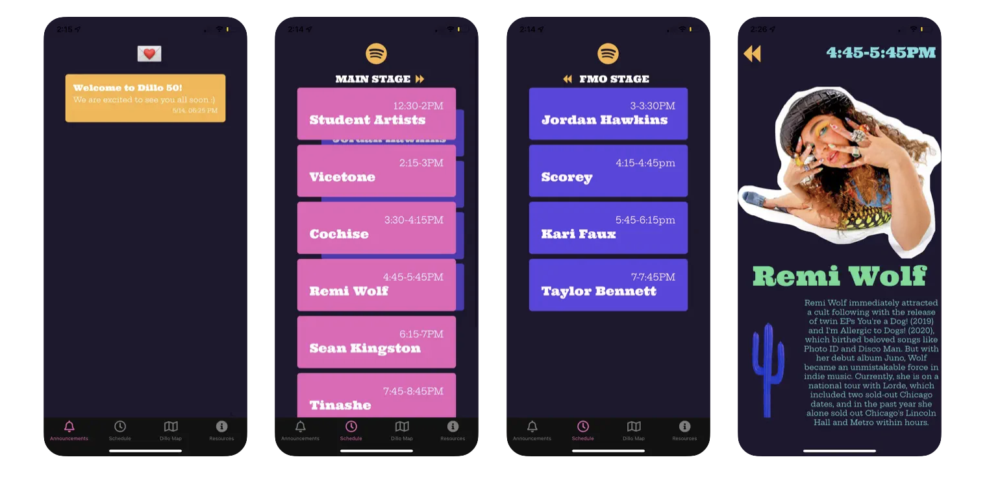

Dillo App
Dillo Day is an annual music event held at Northwestern University. It is the nations largest student-led music festival and it is completely run by Mayfest Productions, an organization on campus. As part of the Tech Team, I was among a group of 4 that designed and created the Dillo Day App. The app contained the artist lineup/schedule for the festival and a map of the stage performances. The app also enabled push notifications and an emergency number hotline. It was made using Typescript, React Native, and Firebase. It is currently available on both the App Store and Google Play Store.
